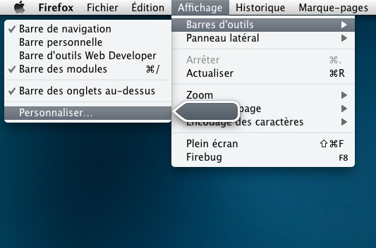
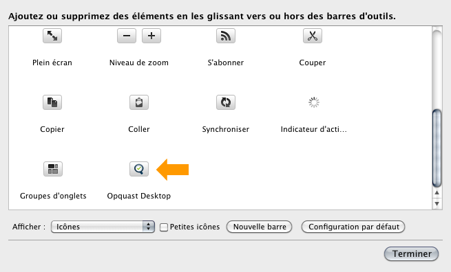

À propos
Le projet Opquast
Opquast (Open Quality Standards) est un framework d'amélioration de la qualité et de l'accessibilité Web porté par la société Temesis. Il est né fin 2003. Le projet met à disposition des check-lists (Qualité Web, SEO, Open data…), des outils de test (Opquast Desktop, l'Inspecteur), une application mobile (iOpquast) et des services en ligne (Opquast reporting, Opquast directory…).
Opquast Desktop
Opquast Desktop est une application qui vous permet d'analyser votre site au regard de différentes check-lists qualité ou accessibilité.
Démarrage
Installation du bouton
- Ouvrir la barre personnaliser (Affichage > Barre d'outils > Personnaliser)

- Prendre le bouton opquast et le placer où vous le souhaitez dans l'interface

Analyser une page
Analyse rapide
- Appuyer sur le bouton pour ouvrir le panneau Opquast Desktop. Ce bouton sert également à refermer le panneau ;
- Si l'URl courante a déjà été analysée, l'application affichera directement les résultats de la dernière analyse ;
- Dans le cas contraire, l'outil vous proposera de lancer l'analyser ;
- Pour lancer ou relancer, cliquer sur le bouton correspondant ;
- Les résultats s'afficheront directement dans le panneau ;
- Vous pouvez lancer ou relancer l'analyse à tout moment.
Manipulation des résultats
- Recherche : tapez une chaîne de caractères que vous recherchez dans les critères et la liste de critères et de résultats sera automatiquement filtrée en fonction de votre requête.
- Filtres : vous pouvez demander à afficher uniquement les critères issus d'une check-list ou pour un type de résultats. Pour ceci, utilisez les zones de sélection situées dans les en-tête de colonnes.
- Détails : La flêche située en début de ligne vous permet d'accéder aux détails de l'analyse. Pour chaque test, Opquast Desktop vous fournit un commentaire global et lorsque cela est pertinent la liste et un lien vers les nœuds concernés. Vous pouvez refermer les détails en cliquant sur l'icône à nouveau.
- Exporter : le bouton exporter vous permet d'exporter vos résultats au format CSV.
Une remarque, un problème, signalez-le
Si vous rencontrez un problème, souhaitez nous proposer des améliorations ou simplement donner votre avis sur l'outil, n'hésitez pas à créer un ticket sur ce projet.
Crédits
Version
Le numéro de version d'Opquast Desktop est indiqué dans le gestionnaire de modules complémentaires.
Conception et développements
Olivier meunier, Elie Sloïm, Fabrice Bonny et Aurélien Levy pour Temesis SAS - 18, rue Lucien Granet 33150 Cenon - France
Avec l'assistance du pôle Aquitain en logiciels libre Aquinetic et avec le soutien de la Région Aquitaine.
Merci à l'équipe de Temesis, à tous les contributeurs et partenaires du projet Opquast.
Licences
Extension Opquast Desktop
Référentiels fournis
| Référentiel | Version | Licence |
|---|---|---|
| Opquast Qualité Web | Version 2 (2010) | Creative commons BY-SA |
| Opquast SEO | Version 1 (2011) | Creative commons BY-SA |
| Opquast Accessibility First Step | Version 1 (2012) | Creative commons BY-SA |
| Opquast Accessibility Second Step | Version 1 (2012) | Creative commons BY-SA |
| Accessiweb Déployé | Version 2.1 (2009) | Copyright © 2010 Association BrailleNet. Tous droits Réservés. |
| RGAA (Référentiel Général d'accessibilité pour les administrations) | Version 2.2.1 (2009) | À préciser |